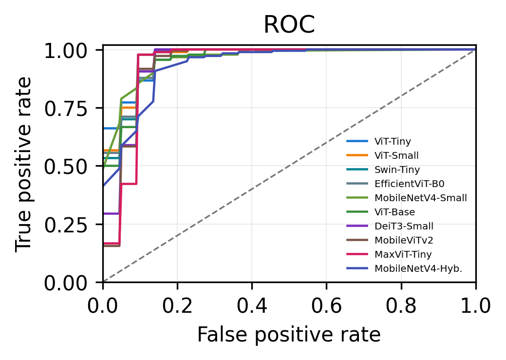
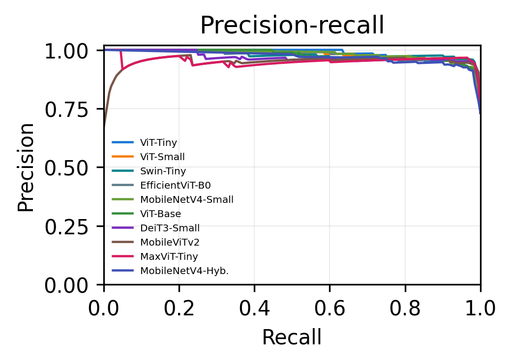
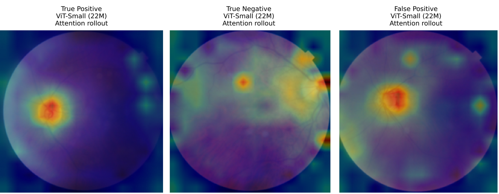

Ten Backbones on Fundus Images Under One Controlled Protocol
Braincore Indonesia · Universitas Esa Unggul · Universitas Brawijaya · Universitas Terbuka · Universitas Hasanuddin · Universitas Jember — ICITRI 2026
Motivation & Research Gap
Dataset & Benchmark Design
Results: the top cluster is not separable
Efficiency & Deployment Implications
Limitations & Conclusion
Glaucoma is a leading cause of irreversible blindness — optic-nerve damage is progressive and permanent
Projected to rise from 64 million cases in 2013 to about 112 million by 2040 (Tham et al. 2014)
Many cases stay undetected until substantial damage has occurred
Color fundus photography is non-invasive and low cost — but manual assessment does not scale in high-volume screening
> Key question: which backbone family should carry an automated screening tool?
The problem with the literature
Reported performance shifts with camera, image quality, labeling, and population
Transformer vs. lightweight comparisons are drawn across studies, with different datasets and pipelines
Image-level splits let the same patient appear in train and test
What we do instead
Ten backbones, one dataset, one protocol
Patient-level split — no patient crosses the boundary
Identical preprocessing, optimizer, schedule, and checkpoint rule
Three seeds, plus bootstrap CIs and significance testing
Hillel Yaffe Glaucoma Dataset (“Hillel Yaffe Glaucoma Dataset (HYGD)” 2024)
747 fundus images from 288 patients
548 GON-positive, 199 GON-negative
TOPCON DRI OCT Triton, 45^\circ field of view
Full fundus used — no disc cropping, no masking, no quality filtering
Split at the patient level, 70:20:10
| Subset | Patients | Images |
|---|---|---|
| Train | 201 | 494 |
| Validation | 57 | 171 |
| Test | 30 | 82 |
Audit found no mixed-label patients
Patient-level grouping prevents same-patient leakage — a stricter estimate than image-level splits
| Family | Model | Params |
|---|---|---|
| Pure transformer | ViT-Base | 85.8 M |
| ViT-Small | 21.7 M | |
| DeiT3-Small | 21.7 M | |
| ViT-Tiny | 5.5 M | |
| Hierarchical / hybrid | MaxViT-Tiny | 30.4 M |
| Swin-Tiny | 27.5 M | |
| Lightweight / mobile | MobileNetV4-Hyb. | 9.8 M |
| MobileViTv2-1.0 | 4.4 M | |
| MobileNetV4-Small | 2.5 M | |
| EfficientViT-B0 | 2.1 M |
One protocol for all ten
ImageNet-pretrained, head replaced, fine-tuned end to end
AdamW, LR 10^{-4}, weight decay 10^{-4}, batch 16, 20 epochs, cosine annealing
Seeds 42, 43, 44
Checkpoint chosen on validation accuracy, then evaluated once on the held-out test set
A 40\times parameter spread — does capacity buy accuracy here?
GON-positive is the positive class
Sensitivity is emphasized — a false negative is a missed glaucoma case
Accuracy, specificity, PPV, NPV, balanced accuracy, F1
Beyond a single threshold
ROC and precision–recall curves are threshold-independent
Patient-clustered bootstrap CIs — resample the 30 test patients, keep all their images
Exact McNemar with Bonferroni correction
The test cohort is small by design of the patient-level split — so uncertainty must be quantified, not assumed
| Model | Params | Acc. | Sens. | F1 | AUC |
|---|---|---|---|---|---|
| DeiT3-Small | 21.7 M | 0.951 | 0.983 | 0.967 | 0.945 |
| ViT-Small | 21.7 M | 0.951 | 0.972 | 0.966 | 0.967 |
| MaxViT-Tiny | 30.4 M | 0.947 | 0.978 | 0.964 | 0.934 |
| Swin-Tiny | 27.5 M | 0.943 | 0.961 | 0.961 | 0.964 |
| MobileViTv2-1.0 | 4.4 M | 0.939 | 0.972 | 0.959 | 0.937 |
| ViT-Tiny | 5.5 M | 0.935 | 0.967 | 0.956 | 0.967 |
| EfficientViT-B0 | 2.1 M | 0.927 | 0.950 | 0.950 | 0.961 |
| MobileNetV4-Small | 2.5 M | 0.915 | 0.933 | 0.941 | 0.960 |
| ViT-Base | 85.8 M | 0.911 | 0.928 | 0.938 | 0.954 |
| MobileNetV4-Hyb. | 9.8 M | 0.906 | 0.950 | 0.937 | 0.934 |
Mean over three seeds. Note the last-but-one row: the largest model is near the bottom.


Several transformer and compact backbones rank almost identically, even where threshold-based accuracy differs
82 images from 30 patients — a one percent accuracy difference is a single prediction changing.
Bootstrap 95% CI on accuracy
| Model | Interval |
|---|---|
| DeiT3-Small | [0.83, 0.96] |
| ViT-Small | [0.94, 1.00] |
| MaxViT-Tiny | [0.90, 0.99] |
| Swin-Tiny | [0.87, 0.98] |
| MobileViTv2 | [0.84, 0.96] |
| ViT-Tiny | [0.88, 0.99] |
Exact McNemar, 82 paired predictions
| Model A | Model B | p |
|---|---|---|
| ViT-Small | DeiT3-Small | 0.031 |
| ViT-Small | MaxViT-Tiny | 1.000 |
| ViT-Small | Swin-Tiny | 0.375 |
| DeiT3-Small | MaxViT-Tiny | 1.000 |
| DeiT3-Small | Swin-Tiny | 0.453 |
| MaxViT-Tiny | Swin-Tiny | 1.000 |
Bonferroni: \alpha_{\text{corr}} = 0.05/6 \approx 0.0083
Intervals overlap broadly, no pair survives correction — ranking by point accuracy would be reading noise
Capacity does not
ViT-Base is the largest model at 85.8 M parameters — and lands near the bottom
DeiT3-Small and ViT-Small, at a quarter of that size, lead the table
On a dataset of this size, extra capacity is not automatically useful
Efficiency and screening behaviour do
Sensitivity matters more than accuracy for screening — a missed case is the costly error
Inference cost differs by orders of magnitude across the cluster
Those differences are measurable; the accuracy differences are not
| Model | Params (M) | FLOPs (G) | Latency (ms) | Peak Mem (MB) |
|---|---|---|---|---|
| EfficientViT-B0 | 2.1 | 0.20 | 6.3 | 20.3 |
| MobileNetV4-Small | 2.5 | 0.37 | 5.3 | 21.8 |
| ViT-Tiny | 5.5 | 2.15 | 4.3 | 31.5 |
| MobileViTv2-1.0 | 4.4 | 2.83 | 9.3 | 42.4 |
| ViT-Small | 21.7 | 8.48 | 4.9 | 96.0 |
| DeiT3-Small | 21.7 | 8.49 | 5.3 | 96.0 |
| Swin-Tiny | 27.5 | 8.99 | 9.6 | 132.8 |
| MaxViT-Tiny | 30.4 | 10.76 | 23.8 | 167.6 |
| ViT-Base | 85.8 | 33.70 | 6.9 | 343.6 |
ViT-Tiny is the best accuracy–efficiency balance: lowest latency, a quarter of the FLOPs of ViT-Small, and 0.6 points below the best F1

ViT-Small. Transformer backbone, so attention rollout rather than convolutional Grad-CAM.
Maps often highlight optic-disc and vessel-adjacent regions, which is anatomically plausible
HYGD has no ground-truth ROI labels, so this is a qualitative sanity check, not quantitative evidence
One split, one dataset. Three seeds, but a single patient-level partition and no external cohort.
82 test images from 30 patients. Specificity, NPV, and ranking are all sensitive to a handful of decisions.
Full fundus, no anatomy-aware preprocessing. Identical across models, but untested against disc-cropping pipelines.
GPU-only profiling. Batch-1 NVIDIA L4; CPU and edge behaviour will differ.
This is internal benchmark evidence for narrowing architecture choices — not clinical validation.
Conclusion
Ten backbones, one controlled protocol, patient-level split
DeiT3-Small and ViT-Small lead on accuracy and F1 — but the top cluster is statistically indistinguishable
Larger is not better: ViT-Base underperforms models a quarter its size
Compact backbones stay competitive at a fraction of the cost
Future Work
External multi-center cohorts — the precondition for any generalization claim
Repeated patient-level resplitting
Anatomy-aware preprocessing studies
CPU and edge-device benchmarking
Quantitative XAI against annotated ROIs
Thank You
Questions?